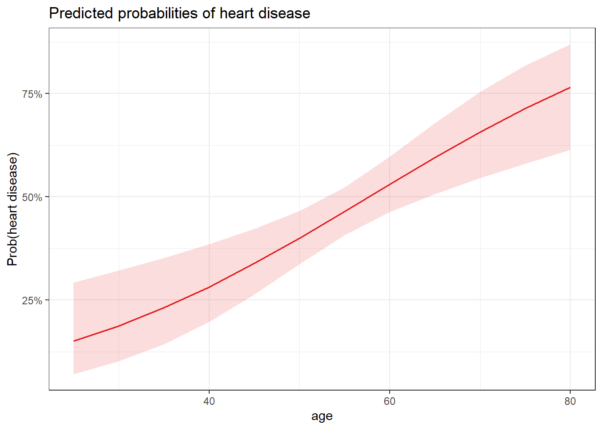
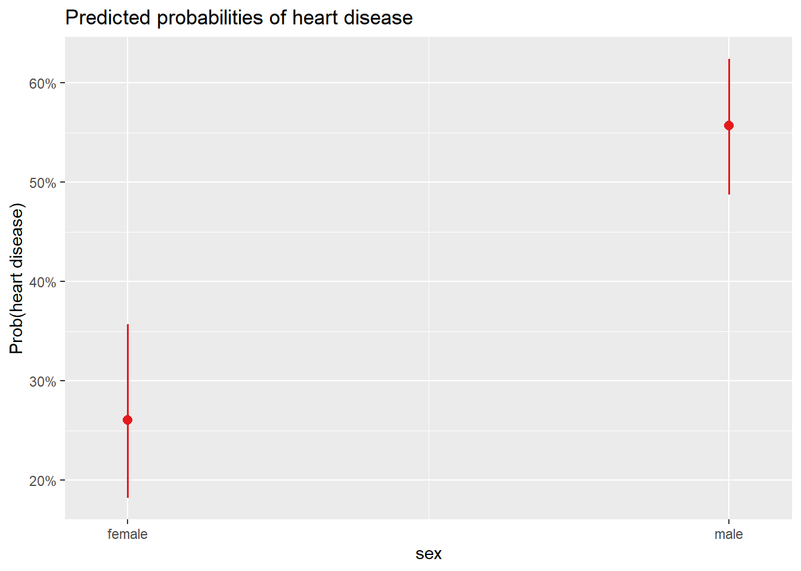
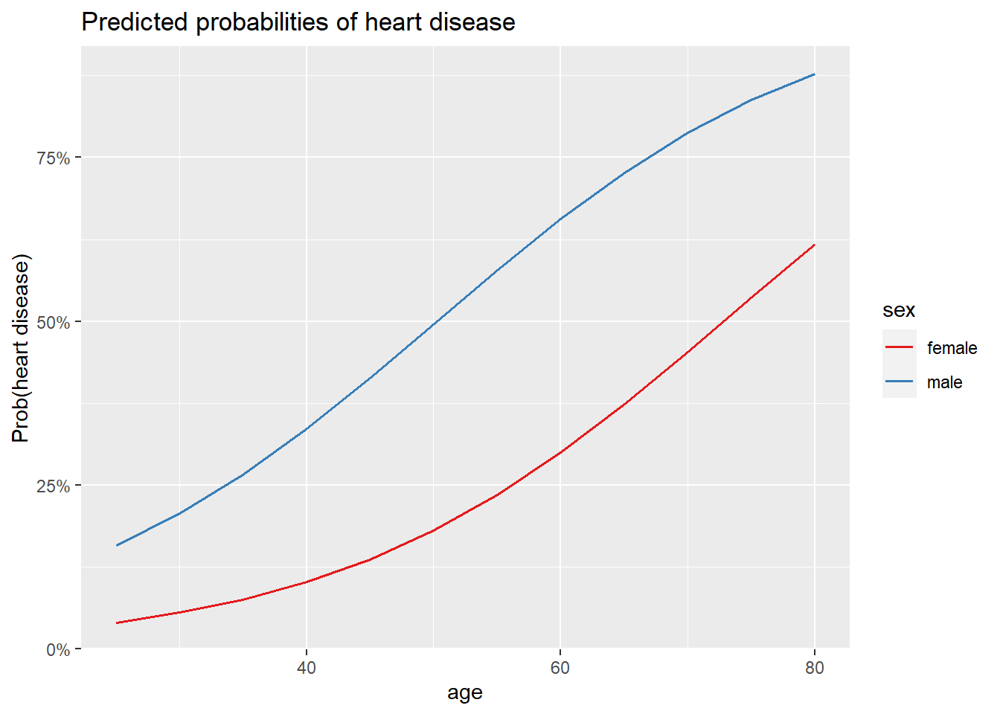
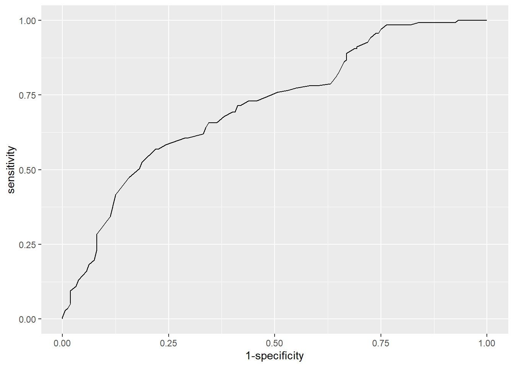
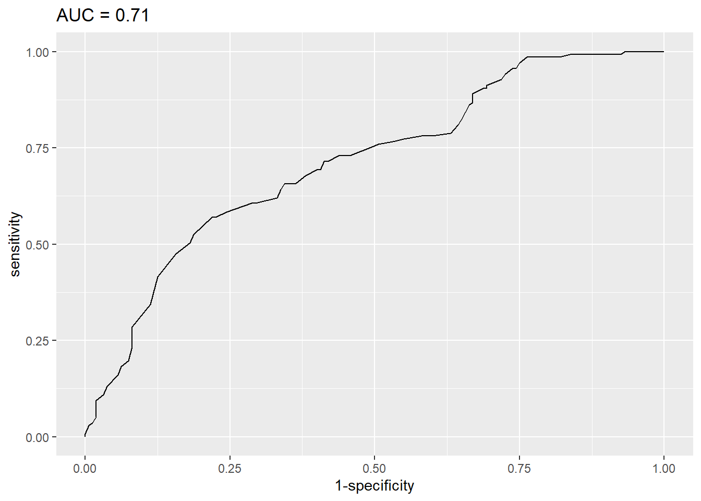
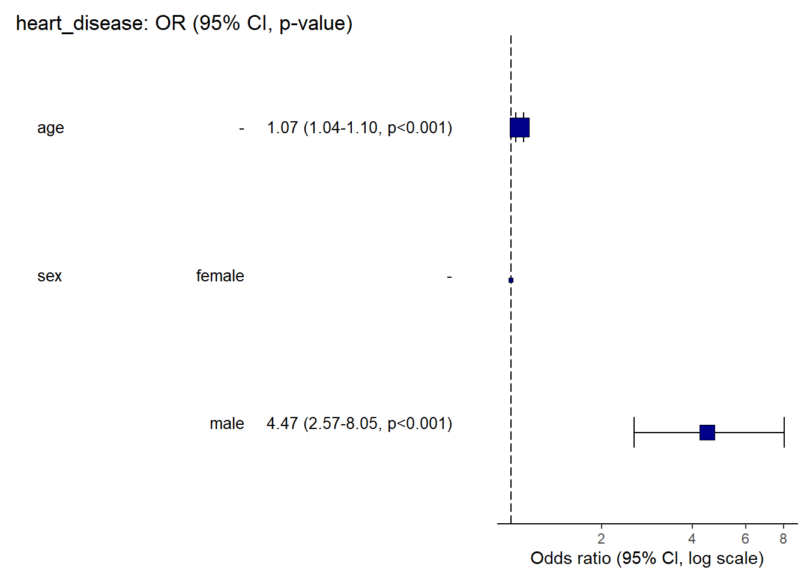

Code
library(kmed)
dat <- heartBarboza-Salerno
2024-02-11
The data is a mixed variable dataset containing 14 variables of 297 patients for their heart disease diagnosis. The data comes in an R package called kmed which you can read about on your own. Patients were diagnosed with heart disease in four classes. We will used this dataset to illustrate how multiple risk factors are related to a heart disease diagnosis, such as age (years), sex (FALSE = female; TRUE = male), chest pain (1 = typical angina, 2 = atypical angina, 3 = non-anginal pain, and 4 = asymptomatic) and thalach (max heart rate achieved).
Attaching package: 'dplyr'The following objects are masked from 'package:stats':
filter, lagThe following objects are masked from 'package:base':
intersect, setdiff, setequal, union'data.frame': 297 obs. of 5 variables:
$ age : num 63 67 67 37 41 56 62 57 63 53 ...
$ sex : logi TRUE TRUE TRUE TRUE FALSE TRUE ...
$ cp : Factor w/ 4 levels "1","2","3","4": 1 4 4 3 2 2 4 4 4 4 ...
$ thalach: num 150 108 129 187 172 178 160 163 147 155 ...
$ class : int 0 2 1 0 0 0 3 0 2 1 ...
- attr(*, "na.action")= 'omit' Named int [1:6] 88 167 193 267 288 303
..- attr(*, "names")= chr [1:6] "88" "167" "193" "267" ...
Call:
glm(formula = heart_disease ~ age, family = "binomial", data = dat)
Coefficients:
Estimate Std. Error z value Pr(>|z|)
(Intercept) -3.05122 0.76862 -3.970 7.2e-05 ***
age 0.05291 0.01382 3.829 0.000128 ***
---
Signif. codes: 0 '***' 0.001 '**' 0.01 '*' 0.05 '.' 0.1 ' ' 1
(Dispersion parameter for binomial family taken to be 1)
Null deviance: 409.95 on 296 degrees of freedom
Residual deviance: 394.25 on 295 degrees of freedom
AIC: 398.25
Number of Fisher Scoring iterations: 4(Intercept)
0.04516478 Waiting for profiling to be done... 2.5 % 97.5 %
1.026699 1.083987 1 1
0.07873357 0.29697138 1 1
0.07873156 0.29697339 Data were 'prettified'. Consider using `terms="age [all]"` to get smooth
plots.
Call:
glm(formula = heart_disease ~ sex, family = "binomial", data = dat)
Coefficients:
Estimate Std. Error z value Pr(>|z|)
(Intercept) -1.0438 0.2326 -4.488 7.18e-06 ***
sexmale 1.2737 0.2725 4.674 2.95e-06 ***
---
Signif. codes: 0 '***' 0.001 '**' 0.01 '*' 0.05 '.' 0.1 ' ' 1
(Dispersion parameter for binomial family taken to be 1)
Null deviance: 409.95 on 296 degrees of freedom
Residual deviance: 386.12 on 295 degrees of freedom
AIC: 390.12
Number of Fisher Scoring iterations: 4(Intercept)
0.2604167
Pearson's Chi-squared test with Yates' continuity correction
data: table(dat$heart_disease, dat$sex)
X-squared = 21.852, df = 1, p-value = 2.946e-06 1
0.5572139 
1
0.06224456 Data were 'prettified'. Consider using `terms="age [all]"` to get smooth
plots.
| heart disease | heart disease | |||
| Predictors | Odds Ratios | p | Odds Ratios | p |
| (Intercept) | 0.01 *** | <0.001 | 0.35 *** | <0.001 |
| sex [male] | 4.47 *** | <0.001 | 3.57 *** | <0.001 |
| age | 1.07 *** | <0.001 | ||
| Observations | 297 | 297 | ||
| R2 Tjur | 0.142 | 0.078 | ||
| AIC | 370.435 | 390.118 | ||
| * p<0.05 ** p<0.01 *** p<0.001 | ||||
Type 'citation("pROC")' for a citation.
Attaching package: 'pROC'The following objects are masked from 'package:stats':
cov, smooth, varSetting levels: control = no disease, case = diseaseSetting direction: controls < cases

| Characteristic | OR1 | 95% CI1 | p-value |
|---|---|---|---|
| sex | |||
| female | — | — | |
| male | 4.47 | 2.57, 8.05 | <0.001 |
| age | 1.07 | 1.04, 1.10 | <0.001 |
| 1 OR = Odds Ratio, CI = Confidence Interval | |||
Waiting for profiling to be done...
Waiting for profiling to be done...
Waiting for profiling to be done...Warning: Removed 1 rows containing missing values (`geom_errorbarh()`).
library(car) vif(m3) ``
---
title: "Logistic Regression"
author: "Barboza-Salerno"
format: html
---
---
title: "Logistic Regression"
author: "Barboza-Salerno"
date: "2024-02-11"
output: html_document
---
```{r setup, include=FALSE}
knitr::opts_chunk$set(echo = TRUE)
```
# The Dataset
The data is a `mixed variable` dataset containing 14 variables of 297 patients for their heart disease diagnosis. The data comes in an R package called [`kmed`](https://search.r-project.org/CRAN/refmans/kmed/html/heart.html) which you can read about on your own. Patients were diagnosed with heart disease in four classes. We will used this dataset to illustrate how multiple risk factors are related to a heart disease diagnosis, such as age (years), sex (FALSE = female; TRUE = male), chest pain (1 = typical angina, 2 = atypical angina, 3 = non-anginal pain, and 4 = asymptomatic) and thalach (max heart rate achieved).
```{r}
library(kmed)
dat <- heart
```
```{r}
# select variables
library(dplyr)
dat <- dat |>
select(
age,
sex,
cp,
thalach,
class
)
# print dataset's structure
str(dat)
```
```{r}
# rename variables
dat <- dat |>
rename(
chest_pain = cp,
max_heartrate = thalach,
heart_disease = class
)
```
```{r}
# recode sex
dat$sex <- factor(dat$sex,
levels = c(FALSE, TRUE),
labels = c("female", "male")
)
```
```{r}
# recode chest_pain
dat$chest_pain <- factor(dat$chest_pain,
levels = 1:4,
labels = c("typical angina", "atypical angina", "non-anginal pain", "asymptomatic")
)
```
```{r}
# recode heart_disease into 2 classes
dat$heart_disease <- ifelse(dat$heart_disease == 0,
0,
1
)
```
```{r}
# set labels for heart_disease
dat$heart_disease <- factor(dat$heart_disease,
levels = c(0, 1),
labels = c("no disease", "disease")
)
```
```{r}
levels(dat$heart_disease)
```
```{r}
# save model
m1 <- glm(heart_disease ~ age,
data = dat,
family = "binomial"
)
```
```{r}
summary(m1)
```
```{r}
# OR for age
exp(coef(m1)["age"])
```
```{r}
# prob(heart disease) for age = 0
exp(coef(m1)[1]) / (1 + exp(coef(m1)[1]))
```
```{r}
# 95% CI for the OR for age
exp(confint(m1,
parm = "age"
))
```
```{r}
# predict probability to develop heart disease
pred <- predict(m1,
newdata = data.frame(age = c(30)),
type = "response"
)
```
```{r}
pred
```
```{r}
# predict probability to develop heart disease
pred <- predict(m1,
newdata = data.frame(age = c(30)),
type = "response",
se = TRUE
)
```
```{r}
pred$fit
```
```{r}
# 95% confidence interval for the prediction
lower <- pred$fit - (qnorm(0.975) * pred$se.fit)
upper <- pred$fit + (qnorm(0.975) * pred$se.fit)
c(lower, upper)
```
```{r}
# 95% confidence interval for the prediction
lower <- pred$fit - (1.96 * pred$se.fit)
upper <- pred$fit + (1.96 * pred$se.fit)
c(lower, upper)
```
```{r}
library(sjPlot)
library(ggplot2)
```
```{r}
# plot
plot_model(m1,
type = "pred",
terms = "age"
) +
labs(y = "Prob(heart disease)") + theme_bw()
```
```{r}
# levels for sex
levels(dat$sex)
```
```{r}
# save model
m2 <- glm(heart_disease ~ sex,
data = dat,
family = "binomial"
)
```
```{r}
summary(m2)
```
```{r}
exp(coef(m2)["sexmale"])
```
```{r}
# prob(disease) for sex = female
exp(coef(m2)[1]) / (1 + exp(coef(m2)[1]))
```
```{r}
chisq.test(table(dat$heart_disease, dat$sex))
```
```{r}
# predict probability to develop heart disease
pred <- predict(m2,
newdata = data.frame(sex = c("male")),
type = "response"
)
pred
```
```{r}
# plot
plot_model(m2,
type = "pred",
terms = "sex"
) +
labs(y = "Prob(heart disease)")
```
```{r}
# create data frame of new patient
new_patient <- data.frame(
age = 32,
sex = "female"
)
```
```{r}
m3 <- glm(heart_disease ~ sex + age,
data = dat,
family = "binomial"
)
# predict probability to develop heart disease
pred <- predict(m3,
newdata = new_patient,
type = "response"
)
# print prediction
pred
```
```{r}
# 1. age, sex and chest pain on prob of disease
plot_model(m3,
type = "pred",
terms = c("age", "sex"),
ci.lvl = NA # remove confidence bands
) +
labs(y = "Prob(heart disease)")
```
```{r}
tab_model(m3, m2,
show.ci = FALSE, # remove CI
show.aic = TRUE, # display AIC
p.style = "numeric_stars" # display p-values and stars
)
```
```{r}
library(pROC)
```
```{r}
# save roc object
res <- roc(heart_disease ~ fitted(m3),
data = dat
)
# plot ROC curve
ggroc(res, legacy.axes = TRUE)
```
```{r}
res$auc
```
```{r}
# plot ROC curve with AUC in title
ggroc(res, legacy.axes = TRUE) +
labs(title = paste0("AUC = ", round(res$auc, 2)))
```
```{r}
library(gtsummary)
```
```{r}
# print table of results
tbl_regression(m3, exponentiate = TRUE)
```
```{r}
library(finalfit)
# set variables
dependent <- "heart_disease"
independent <- c("age", "sex")
independent_final <- c("age", "sex", "chest_pain")
dat |> or_plot(dependent, independent,
table_text_size = 3.5 # reduce text size
)
```
```{r}
library(car)
vif(m3)
``